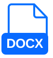

Save back to the same Word file
In Apple Pages, you export your edits to Word. In FreeDocx, pressing ⌘S updates the .docx you opened.
Edit a Word document on your Mac and save changes directly to the same .docx file.
Fix a typo, update a résumé, or send a revised document back to a colleague.
Download FreeDocx Beta for Mac1.0 Beta 1 · DMG · macOS 26.5 or later · Apple silicon and Intel
Signed with Developer ID and notarized by Apple.

In Apple Pages, you export your edits to Word. In FreeDocx, pressing ⌘S updates the .docx you opened.
A lightweight, easy-to-use app that just works.
Quickly fix, update, or tidy up your documents.
Save and close Résumé.docx in FreeDocx. Ask an assistant with local file access, “Shorten the first experience bullet in Résumé.docx and save the change.”
When the assistant finishes, reopen the same file in FreeDocx to review the edited bullet.
No. FreeDocx is a standalone Mac app. You don’t need Microsoft Word installed or a Microsoft subscription to use it. FreeDocx is free and open source.
FreeDocx saves edits directly to the .docx you opened. Apple Pages opens a Word file as a Pages document and exports the changes to a separate Word copy. See the Pages steps.
FreeDocx supports text, basic formatting, and simple lists in .docx files. Use a full word processor for complex tables, tracked changes, and editing headers or footers. Convert older .doc files to .docx first.
Use an assistant that can access files saved on your Mac. Save and close the document before the assistant edits it, then reopen it in FreeDocx. FreeDocx doesn’t include an AI connection or live syncing.